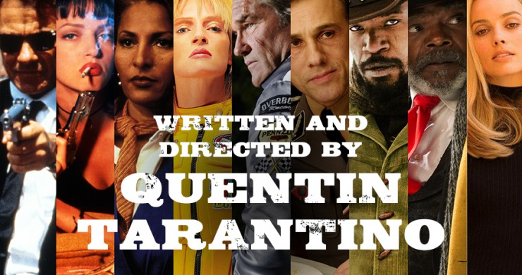

Las 9 películas dirigidas por Quentin Tarantino

Las 9 películas dirigidas por Quentin Tarantino
Este thriller se desarrolla, principalmente, en un almacén. Una banda perteneciente al crimen organizado tiene la misión de entrar en una empresa y robar unos valiosos diamantes. Antes de que la alarma suene, la policía ya está en el lugar del delito, dando pie a un duro enfrentamiento y convirtiendo el almacén en el escenario perfecto para una masacre. Pero ¿qué es lo que ha salido mal? ¿Quién es el traidor?
Los asesinos a sueldo Vincent Vega y Jules Winnfield trabajan para un mafioso llamado Marsellus Wallace . Vincent tendrá que proteger a la pareja de Marsellus, Mia , quien termina al borde de la muerte tras una sobredosis de heroína. Por otra parte un boxeador llamado Butch Coolidge pretende escapar de la ciudad tras no cumplir con el combate amañado que había convenido con Wallace.
Jackie Brown trabaja como azafata de vuelo, y al mismo tiempo se dedica a multiplicar su precario sueldo haciendo contrabando de divisas para Ordell Robbie, un mafioso buscado por la policía.
Pero un día, un agente de aduanas y un policía capturan a Jackie en el aeropuerto y la acusan de tráfico de drogas. A la protagonista solo le queda una salida: tendrá que ayudar y colaborar con la policía para que puedan encontrar al escurridizo Ordell Robbie. Solo de esta manera podrá evitar su ingreso en prisión.
En plena celebración de su boda, la Novia sufre un ataque brutal que acaba con la vida de muchos de sus invitados y también del novio. Mamba Negra estaba embarazada y se sumerge en un largo coma que durará hasta cuatro años. Después de este trance, la Novia se despierta y recuerda lo ocurrido. Descubre desconsolada que ha perdido a su hijo y con él todo lo que más quería, así que la sed de venganza contra los responsables de aquella tragedia será infinita.
Por fin cuando acaba el día, Jungle Julia, la DJ más sexy de Austin, puede relajarse con sus mejores amigas, Shanna y Arlene. Este trío infernal, que vive de noche, atrae todas las miradas en todos los bares y discotecas de Texas. Pero la atracción que suscitan estas tres jóvenes no es forzosamente inocente. Así es como Mike, especialista con la cara marcada e inquietante, sigue sus pasos, agazapado en su coche indestructible. Mientras que Julia y sus amigas beben cervezas, Mike hace rugir el motor de su bólido amenazante...
Es el primer año de la ocupación alemana de Francia. El oficial aliado, teniente Aldo Raine, ensambla un equipo de soldados judíos para cometer actos violentos en contra de los nazis, incluyendo la toma de cabelleras. Él y sus hombres unen fuerzas con Bridget von Hammersmark, una actriz alemana y agente encubierto, para derrocar a los líderes del Tercer Reich. Sus destinos convergen con la dueña de teatro Shosanna Dreyfus, quien busca vengar la ejecución de su familia.
Un exesclavo une fuerzas con un cazador de recompensas alemán que lo liberó y lo ayuda a buscar a los criminales más buscados del sur de los Estados Unidos, con la esperanza de reencontrarse con su esposa.
Wyoming, poco después de acabar la Guerra Civil estadounidense. Un cazarrecompensas, su preso, otro cazarrecompensas y un supuesto sheriff quedan atrapados junto a cuatro desconocidos en una fonda durante una tormenta de nieve. Entre los ocho individuos hay viejas cuentas pendientes que saldar, y probablemente cuando pase la tormenta no todos saldrán con vida del edificio.
A finales de los 60, Hollywood empieza a cambiar y el actor Rick Dalton trata de adaptarse a los nuevos tiempos. Junto a su doble, ambos experimentan problemas para modificar sus hábitos, debido a lo enraizados que están. Al mismo tiempo, nace una relación entre Rick y la actriz Sharon Tate, que fue víctima de la familia Manson en la matanza de 1969.